Chapter 2 · Part 2 — The Monster
“No, we better not,” said Jack. “We don’t know who these books belong to.”
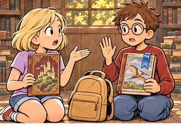
But even as he said this, Jack opened the dinosaur book to where the bookmark was. He couldn’t help himself.
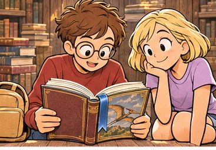
He turned to a picture of an flying reptile. A Pteranodon.
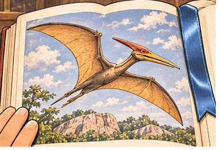
He touched the huge bat-like wings.
“Wow,” whispered Jack. “I wish I could see a Pteranodon for real.”
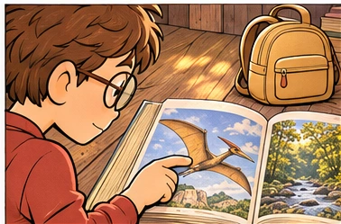
Jack studied the picture of the odd-looking creature through the sky.
“Ahhh!” screamed Annie.
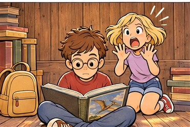
“What?” said Jack.
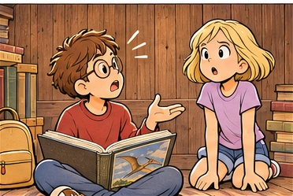
“A monster!” Annie cried. She pointed to the tree house window.
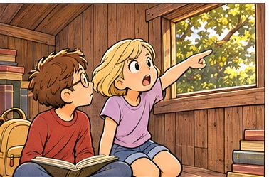
“Stop pretending, Annie,” said Jack.
“No, really!” said Annie.
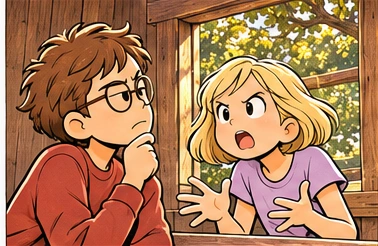
Jack looked out the window.
A giant creature was above the treetops! He had a long, weird on the back of his head. A skinny beak. And huge bat-like wings!
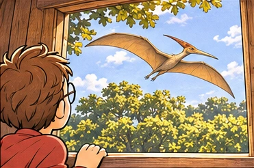
It was a real live Pteranodon!
The creature curved through the sky. He was coming straight toward the tree house. He looked like a glider plane!
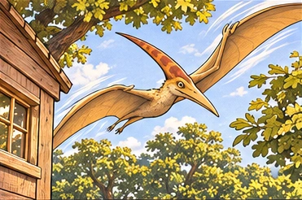
The wind began to blow.
The leaves .
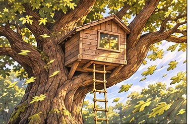
Suddenly the creature soared up. High into the sky. Jack nearly fell out the window trying to see it.
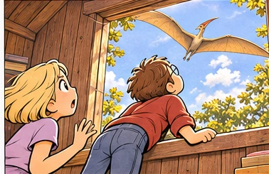
The wind picked up. It was whistling now.
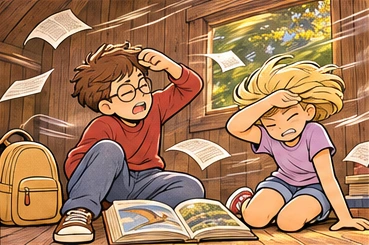
The tree house started to spin.
“What’s happening?” cried Jack.
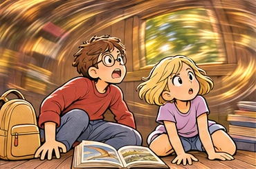
“Get down!” shouted Annie.
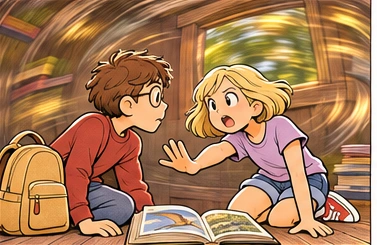
She pulled him back from the window.
The tree house was spinning. Faster and faster.
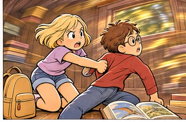
Jack squeezed his eyes shut. He held on to Annie.
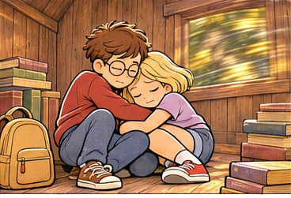
Then everything was still.
Absolutely still.
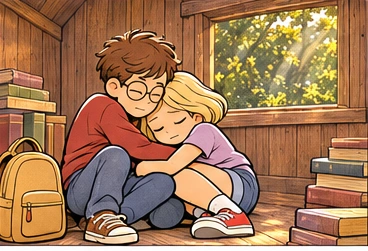
Jack opened his eyes. Sunlight slanted through the window.
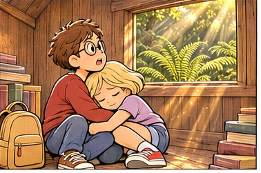
There was Annie. The books. His backpack.
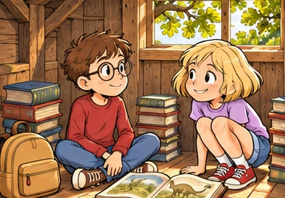
The tree house was still high up in an oak tree.
But it wasn’t the same oak tree.
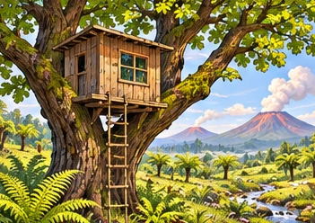